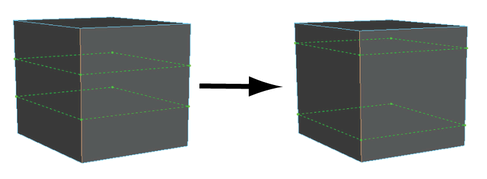

使用这些选项可设置在使用连接工具时发生的情况。选择“网格工具 > 连接工具”(Mesh Tools > Connect Tool) >  ，单击“建模工具包”(Modeling Toolkit)中的
，单击“建模工具包”(Modeling Toolkit)中的  ，或从顶点(Vertex)标记菜单中选择该工具时，“建模工具包”(Modeling Toolkit)中将显示以下选项。有关如何使用该工具的详细信息，请参见连接多边形组件。
，或从顶点(Vertex)标记菜单中选择该工具时，“建模工具包”(Modeling Toolkit)中将显示以下选项。有关如何使用该工具的详细信息，请参见连接多边形组件。
- 滑动(Slide)
- 指定在网格上的什么位置插入边。在将“滑动”(Slide)设置为 0.50（默认值）时，边将插入面中间。
- 分段(Segments)
- 指定插入网格中的已连接的分段数。默认值为 1。
- 收缩(Pinch)
- 指定外侧边和已连接分段之间的距离。
